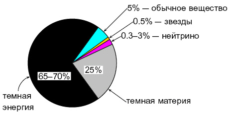

| 4. Баланс энергий в современной Вселенной |
|
Итак, доля обычного вещества (протонов, атомных ядер, электронов) в суммарной энергии в
современной Вселенной составляет5 всего 5%. Помимо обычного вещества во Вселенной имеются и
реликтовые нейтрино — около 300 нейтрино всех типов в кубическом сантиметре. Их вклад в полную
энергию (массу) во Вселенной невелик, поскольку массы нейтрино малы, и составляет заведомо не
более 3%. Оставшиеся 90–95% полной энергии во Вселенной — «неизвестно что». Более того, это
«неизвестно что» состоит из двух фракций — темной материи и темной энергии, как изображено на
рис. 5. 
5 При этом вещества в звездах ещё в 10 раз меньше; обычное вещество находится в основном в облаках газа. |